Pernoctaciones <- read.csv2("./series/Pernoctaciones.csv",
header = TRUE)
Pernoctaciones <- ts(Pernoctaciones[,2]/1000000,
start = 2000,
freq = 12)Prediciendo series temporales interrumpidas
Previsión con Datos Temporales (GBIA)
1 Introducción
Un supuesto fundamental en la predicción de series temporales a partir de datos históricos es que los patrones que se observan en el pasado no van a cambiar. La tendencia y componente estacional observada en el pasado será la misma en el futuro próximo. De esta forma, podemos usar modelos (Alisado exponencial, Arima…) para identificar los patrones pasados y proyectarlos en el futuro.
Sin embargo, algunas veces las series temporales se ven fuertemente perturbadas por acontecimientos que modifican sustancialmente los patrones de comportamiento pasados. Denominaremos a estas, series temporales interrumpidas.
La alteración en una serie temporal puede ser sencilla. Por ejemplo, un cambio de nivel permanente en la serie de ventas de un supermercado causado por la aparición de un competidor; o un cambio de nivel en las ventas de un producto causado por una promoción, seguido de otro cambio de nivel cuando la promoción termina.
En otras ocasiones las perturbaciones pueden ser realmente complejas, cambiando de forma profunda la tendencia de la serie o su patrón estacional.
La predicción de las series temporales interrumpidas es todo un reto, especialmente cuando esta interrupción tiene lugar en un pasado muy reciente.
Un ejemplo de perturbación reciente lo tenemos con la Covid-19 y su efecto sobre un gran número de series temporales. La Figura 1 muestra la serie temporal correspondiente al número de pernoctaciones que los turistas extranjeros realizan en España en alojamientos turísticos autorizados (que llamaremos Pernoctaciones en adelante). Esta serie está disponible en Eurostat desde enero de 2000 hasta diciembre de 2023, un total de 24 años y 288 observaciones.
La serie muestra un comportamiento muy sencillo y claro desde 2000 hasta 2019. A partir del inicio de las medidas de confinamiento en marzo de 2020 debido a la Covid-19, el número de pernoctaciones se reduce de forma brusca a niveles sin precedentes y el marcado patrón estacional observado en el pasado desaparece. La perturbación dura hasta finales de 2021 o inicio de 2022, y parece que en los años 2022 y 2023 se recupera el comportamiento prepandemia.
autoplot(Pernoctaciones,
xlab = "",
ylab = "Noches (millones)",
main = "") +
scale_x_continuous(breaks= seq(2000, 2024, 2))
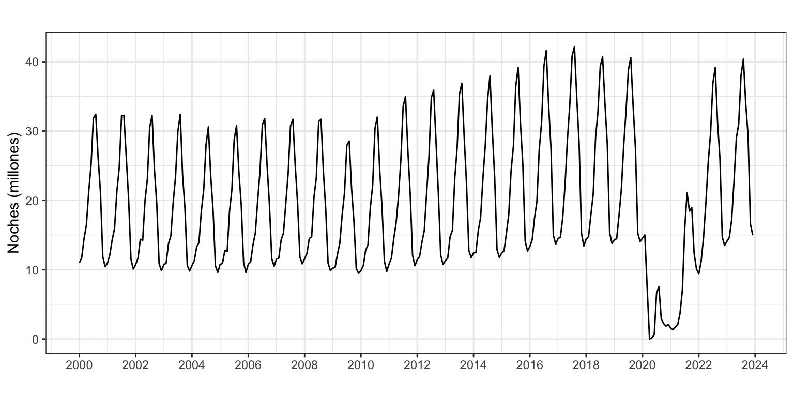
Vamos a ver diferentes aproximaciones al problema de predecir series temporales interrumpidas y comparar los resultados usando la serie de Pasajeros. Para más información, el lector puede acudir a Hyndman and Rostami-Tabar (2024).
2 Algunas estrategias para predecir series interrumpidas
En este epígrafe describiremos cuatro estrategias para predecir series que han sufrido una fuerte perturbación en su pasado reciente. Sabemos que cuando en estadística o, de forma más general, en el análisis de datos existen varias formas de resolver un problema es porque ninguna de ellas es perfecta, usualmente porque el problema es demasiado complejo. Dada una serie temporal interrumpida, hay que probar diferentes aproximaciones al problema de predecir e identificar la que resulta mas prometedora o precisa en sus predicciones.
Uso de modelos muy adaptativos
Algunos modelos, por su naturaleza, reaccionan muy rápidamente ante cambios en la estructura de la serie, adaptándose a ellos. Uno de estos modelos es el Alisado exponencial.
Cuando los parámetros de un modelo de Alisado están próximos a 1, el modelo usa preferentemente la información más reciente de la serie para ajustarse y predecir. De esta forma, ante una perturbación en la serie, estos modelos pueden ajustarse a ella con sencillez y rapidez.
La ventaja de esta estrategia es que simplemente hay que usar un modelo conocido, que es muy sencillo y muy rápido computacionalmente. Además, el ajuste y predicción con estos modelos es automático. La desventaja principal de los modelos de Alisado es que tardan algunos periodos en adaptarse, así que si los cambios se producen de forma constante, el modelo estará constantemente inadaptado.
Uso de intervención
Si la perturbación no es excesivamente compleja, puede incluirse en el proceso de ajuste como intervención de un modelo Arima.
Esta estrategia implica que tenemos un buen entendimiento de la perturbación: punto de inicio y final, efecto sobre la serie temporal, etc.
Su ventaja de nuevo es que trabajamos con modelos ya conocidos y, además, que podremos estimar la estructura de la tendencia y la estacionalidad pasadas y sus cambios con la perturbación. Ahora bien, el modelo asumirá que el comportamiento de la serie tras la perturbación es similar al observado antes de la perturbación. Si esto no es cierto, las predicciones serán del todo incorrectas. Pero incluso si el supuesto es cierto y las previsiones son acertadas, su intervalo de confianza será más estrecho de lo correcto.
Fijar las observaciones durante la perturbacion como valores perdidos
Una aproximación más radical consiste en fijar como valores perdidos todas las observaciones de la serie temporal durante el periodo de la perturbación y ajustar un modelo a la serie resultante. Las predicciones que se realicen con este modelo serían las correspondientes a una realidad donde la perturbación no ha tenido lugar.
Una ventaja de esta aproximación es que no se usa información durante el periodo de la perturbación, por lo que el intervalo de confianza de las predicciones será amplio durante la perturbación y tras ella, y no se irá estrechando hasta que haya suficientes datos como para estimar la distribución de las predicciones con más precisión.
Entre las desventajas de este método están que solo se pueden usar modelos que permitan estimar con datos perdidos, por ejemplo modelos Arima, y que es necesario identificar en que periodo se inicia y termina la perturbación.
Trabajar bajo el escenario qué hubiera pasado si
Esta estrategia en un poco más elaborada que las ya mencionadas dado que toma elementos de varias de ellas. La idea básica es obtener la serie temporal que correspondería a un escenario donde la perturbación no ha tenido lugar y usar esta serie para predecir.
Para el primer paso, obtener una serie completa donde la perturbación no ha tenido lugar tenemos dos alternativas:
Terminamos la serie justo antes de la perturbación, la ajustamos a un modelo y hacemos predicciones durante todo el periodo de la perturbación. Estas predicciones sustituirán los valores reales de la serie, las que han tenido lugar durante a la perturbación.
Asignamos como valores perdidos los datos de la serie durante la perturbación y ajustamos un modelo. Luego sustituimos los valores reales de la serie durante el periodo de la perturbación por los valores estimados por el modelo durante este mismo periodo.
En cualquiera de los dos casos, el resultado es una nueva serie que coincide con la original fuera de los periodos de la perturbación y durante la perturbación toma valores que hubieran podido tener lugar en un escenario donde esta no ha ocurrido.
Esta nueva serie se ajusta por un modelo que, posteriormente, se usa para obtener las predicciones.
Lógicamente, esta estrategia comparte las ventajas y desventajas de las estrategias que usa para su implementación.
3 Ejemplo de aplicación a la serie de Pernoctaciones
Vamos a aplicar estas cuatro estrategias a la serie de Pernoctaciones de turistas internacionales en alojamientos turísticos en España, obteniendo predicciones a doce meses vista al final de cada año desde 2019 hasta 2023.
Los modelos se aplicarán sobre la transformación logarítmica de la serie para garantizar que tanto las predicciones puntuales como por intervalo son positivas y aplicaremos la corrección de sesgo para que la predicción sea la media (y no la mediana) de su distribución.
En todos los casos el modelo se ha identificado de forma automática con las funciones ets y auto.arima.
Uso de modelos muy adaptativos
Observa que esta aproximación básicamente consiste en no hacer nada más allá de elegir un método muy adaptativo. Por este motivo compararemos los resultados obtenidos con Alisado, un modelo muy adaptativo, y con Arima, un modelo muy poco adaptativo.
La Figura 2 muestra el resultado de aplicar Alisado y Arima a los datos. Las predicciones para 2020 se han realizado antes de que el efecto de la Covid-19 tenga lugar y siguen el patrón de pernoctaciones observado en el pasado. Ambos métodos ofrecen prácticamente las mismas predicciones y ambos sobrestiman la realidad.
Las predicciones para 2021 se realizan después de observar 9 meses de fuerte caída de las pernoctaciones como efecto de la Covid-19 y ambos modelos se ajustan a esta caída. Sin embargo, ninguno es capaz de captar la recuperación ocurrida en las pernoctaciones en 2021, de forma que las previsiones de ese año se quedan por debajo de la realidad. Para el año 2022 ambos modelos son capaces de reconocer el incremento en la pernoctaciones ocurrida en los pasados meses, pero de nuevo no captan que las pernoctaciones seguirán creciendo y vuelven a realizar previsiones por debajo de la realidad. Si en 2021 las predicciones mejores son las obtenidas con Arima, en el año siguiente son la de Alisado.
Para 2023 Alisado se ha adaptado plenamente a la casi completa recuperación ocurrida en 2022 y sus predicciones son razonablemente buenas. Por el contrario Arima realiza unas predicciones muy bajas debido a que el modelo identificado usa datos no solo de 2022 sino de años pasados. Por este mismo motivo las predicciones con Arima de 2024 vuelven a ser muy bajas. Además, sorprende lo elevadas de las predicciones de Alisado, que por lo demás repiten razonablemente bien el patrón observado en los dos años previos.
En general, ninguno de los dos métodos lo hace especialmente bien, aunque con el método de Alisado se obtienen mejores predicciones una vez la perturbación ha pasado.
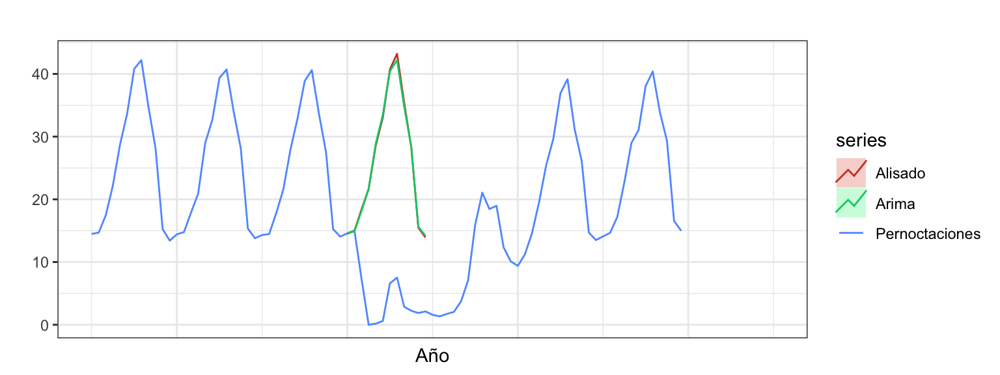
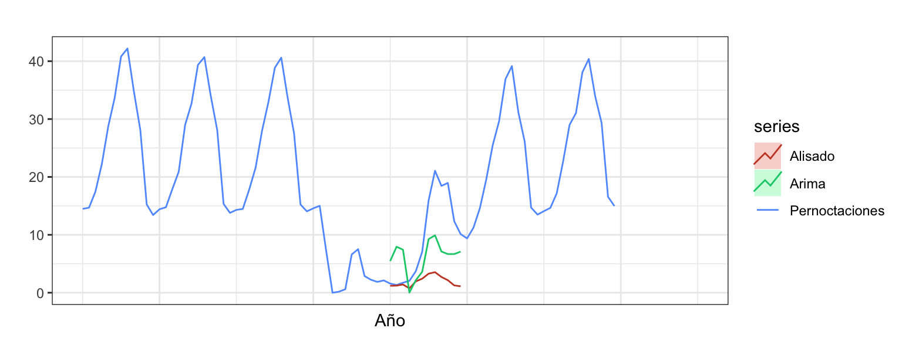
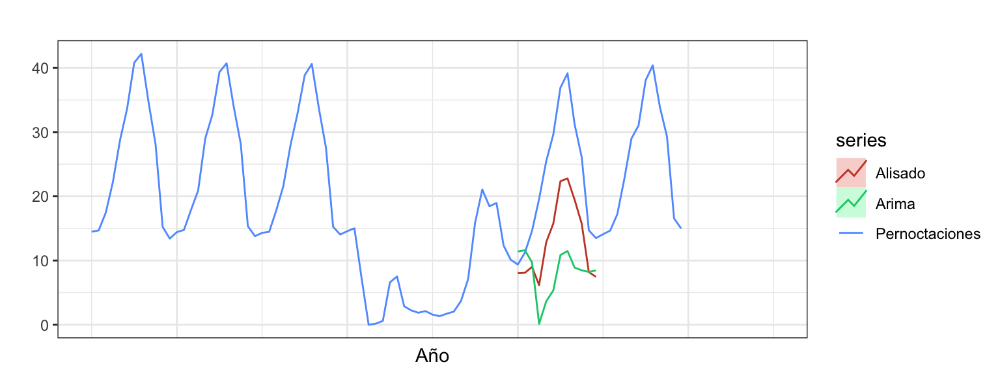

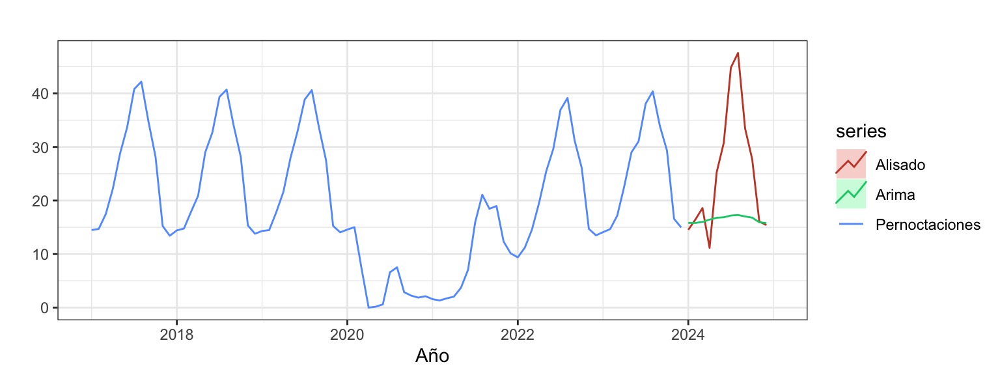
Uso de intervención
Aplicaremos la estrategia de la intervención usando el modelo Arima. Con tal fin vamos a crear dos variables de intervención: un primer cambio de nivel asociado al año de la pandemia, que empieza en marzo de 2020 y termina en diciembre de 2020; y un segundo cambio de nivel para el año 2021, desde enero hasta diciembre.
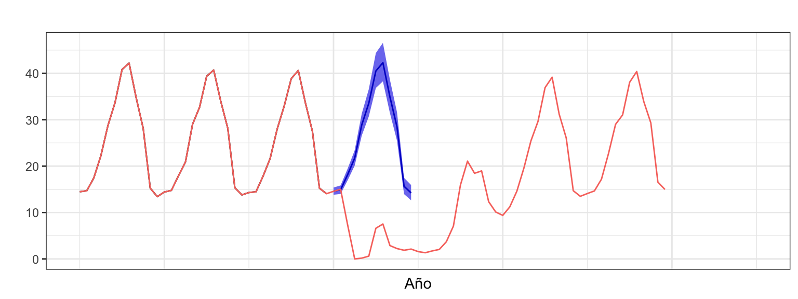
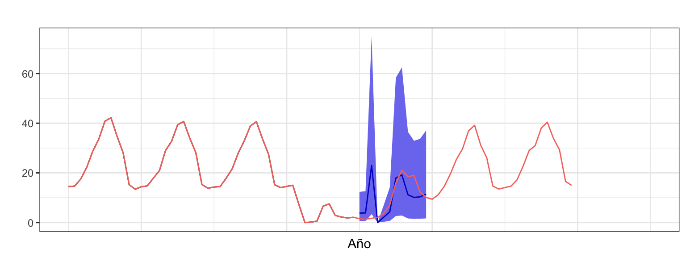
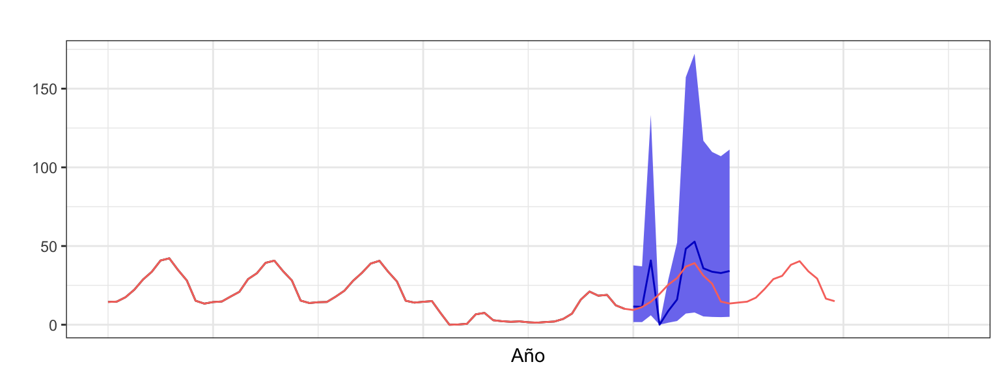
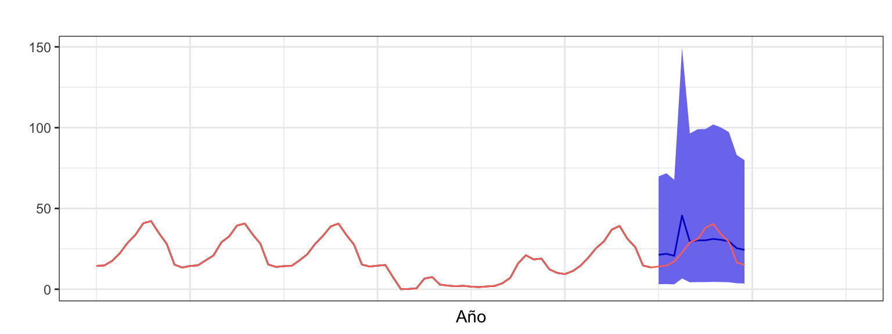
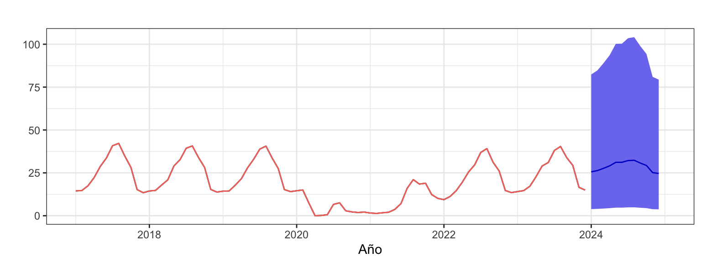
La Figura 3 muestra las predicciones y el intervalo de confianza al 90%. Las predicciones para 2020, realizadas sin conocimiento de la próxima pandemia, siguen el patrón observado en el pasado. Como hasta 2019 la serie era muy regular, el ajuste es muy bueno y el intervalo de confianza de las predicciones estrecho.
Las predicciones para 2021 se realizan tras casi un año de caída en las pernoctaciones con un modelo que estima la magnitud de esta caída a partir de la variable de intervención cambio de nivel en 2020. La predicción para 2021 se corrige a la baja por la mitad de esta magnitud estimada, porque asumimos que habrá una recuperación en el turismo, pero aun así en general se subestima fuertemente la realidad. Además, se observa un intervalo de predicción mucho más ancho debido al aumento de la incertidumbre en el comportamiento de la serie. Para las predicciones del año 2022 de nuevo se aplica la mitad de la caída en las pernoctaciones estimada con la variable de intervención cambio de nivel de 2021 porque otra vez asumimos que la recuperación del turismo continua. En este caso las previsiones a veces se quedan por debajo y otras por encima de la realidad. Además, los dos años de perturbación y cambios en el patrón de la serie se reflejan en un intervalo de confianza para las predicciones aun más amplio.
Durante 2022 la serie ha regresado casi a la normalidad. Además, para las predicciones de 2023 ya no se aplican ninguno de los cambios de nivel estimados. El resultado son unas predicciones mucho mejores que las obtenidas previamente aunque su amplio intervalo de confianza evidencia que todavía pesa mucho la incertidumbre observada en el pasado, con tres años consecutivos de cambios en la estructura de la serie.
La predicciones de 2024 reproducen de forma imperfecta el patrón observado en la pernoctaciones los dos últimos años. Se observa que la variación estacional de las predicciones es mucho más suave que la real. La amplitud del intervalo de confianza es menor que el observado para las predicciones de 2023 debido a que la regularidad en la serie de los dos últimos años ha reducido la incertidumbre.
Fijar las observaciones durante la perturbacion como valores perdidos
Asignar a valores perdidos las observaciones durante el periodo de la perturbación es una forma radical de resolver el problema, pero muy sencilla de implementar. Asumiremos que el efecto de la pandemia se inició en marzo de 2020 y terminó en febrero de 2022. Las 24 observaciones de este periodo se asignarán como NA y la serie resultante se ajustará a un modelo Arima, sin necesidad de incluir intervención.

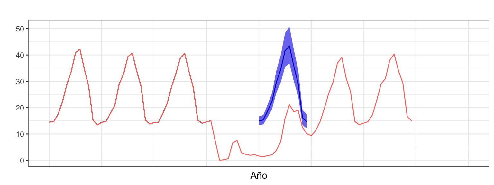
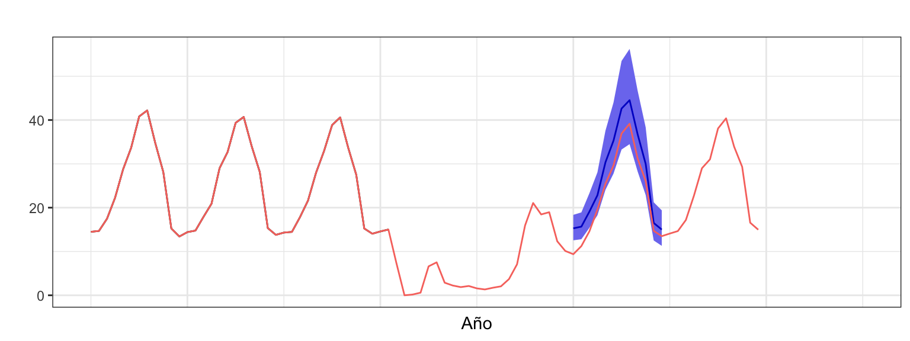
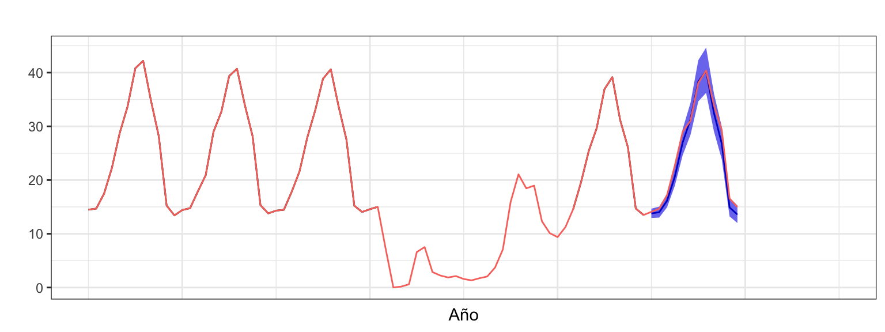
La Figura 4 muestra las predicciones y el intervalo de confianza al 90%. Para los cuatro primeros años la predicción muestra lo que hubiera pasado sin la pandemia de la Covid-19, basándose en el comportamiento de las pernoctaciones hasta 2019. Para los años 2020 y 2021 las predicciones sobrestiman tremendamente la realidad. Pero para el año 2022, cuando el efecto de la pandemia casi había pasado, las predicciones se ajustan mucho más a la serie, aunque la siguen sobrestimando ligeramente. Además, cuanto más alejado es el horizonte temporal de las predicciones, mayor es la incertidumbre y, por tanto, más amplio es el intervalo de confianza.
Finalmente, en 2023 las predicciones se ajustan muy bien a la realidad, y para el año 2024 las predicciones, similares a la obtenidas para el año previo, posiblemente sigan siendo muy precisas.
Trabajar bajo el escenario qué hubiera pasado si
Para el escenario qué hubiera pasado si vamos a estimar un modelo Arima bajo el escenario previo (asignar a valores perdidos las observaciones durante el periodo de la perturbación), y usarlo para estimar que podría haber pasado durante la pandemia. Después, estimamos un segundo modelo Arima con toda la nueva serie y lo usamos para obtener las predicciones.


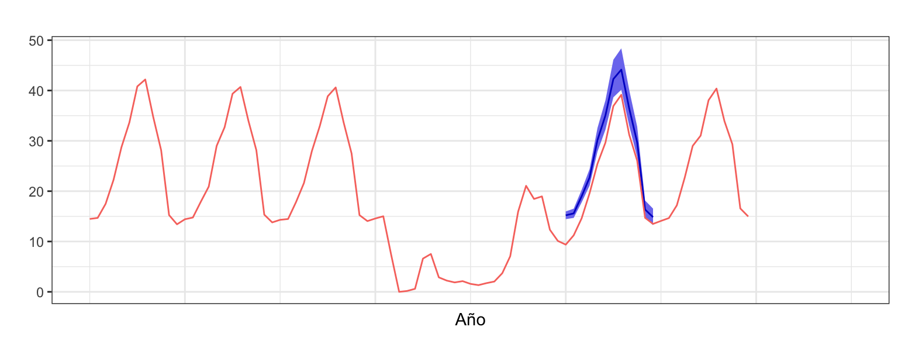
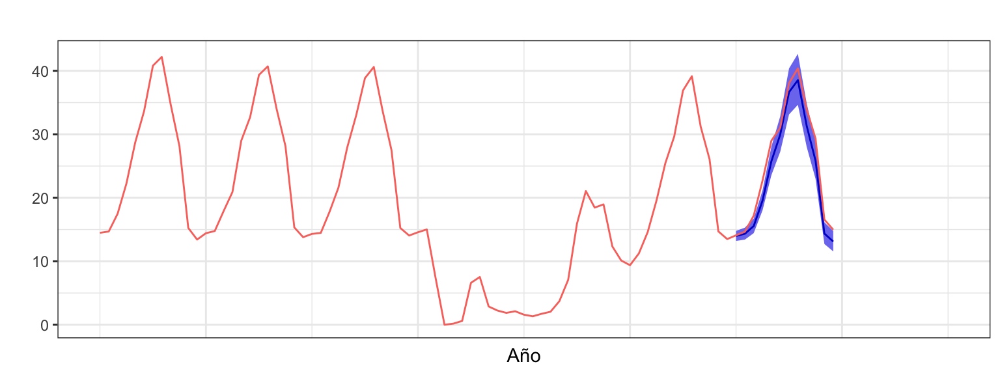
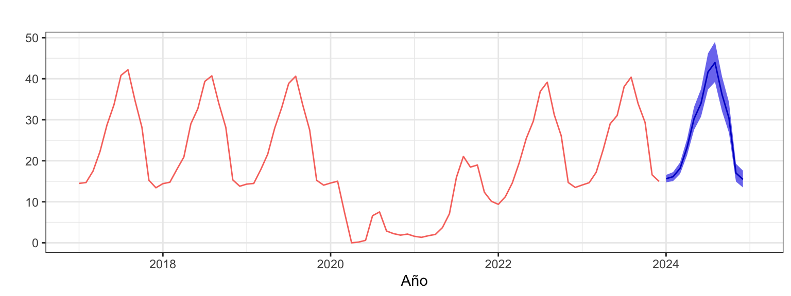
Bajo este escenario las predicciones resultan similares a las obtenidas bajo el supuesto previo con asignación de valores perdidos (véase Figura 5). Sin embargo, los intervalos de confianza son más estrechos. Al sustituir los valores perdidos por valores ajustados, el modelo estimado posteriormente trabaja con una serie muy regular sin incertidumbre y esto se refleja en la amplitud del intervalo de confianza.
References
Hyndman, Rob J., and Bahman Rostami-Tabar. 2024. “Forecasting Interrupted Time Series.” Journal of the Operational Research Society 0 (0): 1–14. https://doi.org/10.1080/01605682.2024.2395315.